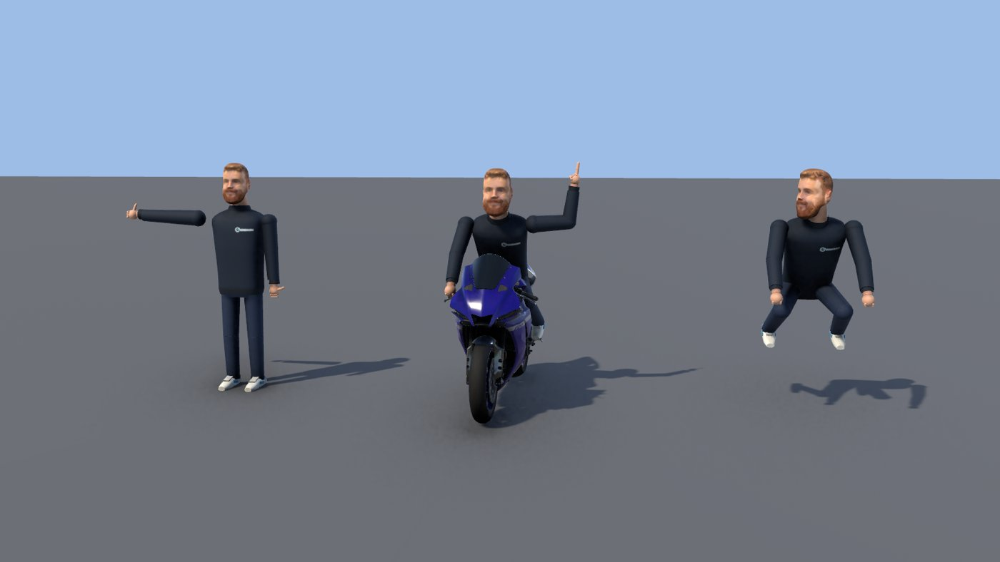

Compte 1 à 2 minutes avec une bonne connexion.
CrashTaRace-Windows.zipClique sur le bouton rouge. Le fichier arrive dans ton dossier « Téléchargements ».
Clic droit sur le fichier, puis « Extraire tout… », puis « Extraire ». Tu obtiens un dossier « Crash Ta Race ». Ne lance pas le jeu depuis l'intérieur du ZIP : il ne trouverait pas ses fichiers.
Crash Ta Race.exeIl est dans le dossier « Crash Ta Race », à côté du fichier LISEZ-MOI.txt. Garde tous les fichiers du dossier ensemble : le jeu a besoin de chacun.
Windows affiche « Windows a protégé votre ordinateur » ? C'est normal pour un jeu amateur qui n'est pas signé par un éditeur. Clique sur « Informations complémentaires », puis sur « Exécuter quand même ». La question n'est posée qu'une fois.
Pour macOS 12 ou plus récent, sur les Mac à puce Apple (M1 et suivantes) comme sur les Mac Intel.
CrashTaRace-Mac.zipAvec le bouton « Mac » en haut de la page.
macOS le décompresse et crée un dossier « Crash Ta Race ».
Confirme avec « Ouvrir ». Un simple double-clic est refusé la première fois, car l'application n'est pas signée auprès d'Apple.
macOS refuse quand même, ou dit que l'application est endommagée ? Ouvre Réglages Système, puis Confidentialité et sécurité, et clique sur « Ouvrir quand même » en bas de la page. Sinon, ouvre le Terminal, tape xattr -cr suivi d'un espace, glisse l'application dans la fenêtre, appuie sur Entrée, puis relance le jeu.
Version Mac toute neuve. Elle a été construite depuis Windows et n'a pas encore été essayée sur un vrai Mac. Si elle ne se lance pas chez toi, la version Windows reste la référence.
CrashTaRace-Mac.zip, 163 835 111 octets (164 Mo)579468f4305e8ad2ef1913389d6a3dfc516c6710d8457e087fd731440d22a3e7Le jeu se règle tout seul sur la fréquence de ton écran.
Vérifie que tu as bien décompressé le ZIP en entier, et que le dossier contient Crash Ta Race.exe, UnityPlayer.dll et le dossier Crash Ta Race_Data. S'il en manque un, décompresse à nouveau.
Un exécutable peu répandu déclenche parfois une alerte par précaution. Tu peux vérifier que ton fichier est bien l'original avec son empreinte, plus bas.
Ferme les autres programmes, branche le secteur sur un portable, et mets à jour le pilote de ta carte graphique.
Appuie sur M : c'est la touche qui coupe et remet le son. Vérifie aussi la sortie audio choisie dans Windows.
CrashTaRace-Windows.zip5b37ae014f78b516adb58f30873865ba5210221f21989cdc7d705861e3b5071cGet-FileHash .\CrashTaRace-Windows.zipTu fais ton propre jeu avec Unity ? Voici le personnage d'Arnaud, prêt à importer : à pied, à moto, ou assis seul pour le poser sur un autre véhicule.

Arnaud.unitypackage, 16 MoAssets/ArnaudPack.b20a728ef5b680366ed25d1bcce5a7c94b9f84cb66bbe4162518396514edcb8c